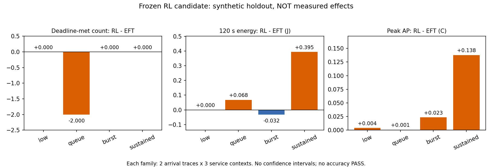

후보 미채택. 단일 표 기반 학습96회 이후 평가120회. 새 실측·모형 재보정·기본 정책 변경 없음. 기한 우선 학습 목표가 실제 기한 보장은 아닙니다. 같은 자료 기반 모형·같은 초기조건이며 실기기 독립 확인이 아닙니다.
계약·결과·한계·재현 · 전체120행 · 대응 차이 · 방문 수

각 입력의6조건은2개 도착열×3개 처리시간 문맥입니다. 6개 독립 실측 반복이 아닙니다. J는0–120초, AP는35–180초입니다. 응답 P95 열은 조건별 P95의 평균이며 요청을 합친 P95가 아닙니다. 에너지·AP는 낮을수록, 기한 충족은 높을수록 좋습니다.
| family | policy | synthetic_conditions | distinct_arrival_traces | planned | completed | deadline_met | mean_j | mean_peak_ap_c | mean_urgent_p95_ms |
|---|---|---|---|---|---|---|---|---|---|
| low | CPU_REFERENCE | 6 | 2 | 144 | 144 | 144 | 142.1232918959887 | 30.192796518996623 | 156.179931 |
| low | SPLIT_REFERENCE | 6 | 2 | 144 | 144 | 144 | 142.40884293862433 | 30.240653367976087 | 294.054635 |
| low | EFT_REFERENCE | 6 | 2 | 144 | 144 | 144 | 142.1232918959887 | 30.192796518996623 | 156.179931 |
| low | ENERGY_AP_REQUEST_V1 | 6 | 2 | 144 | 144 | 144 | 142.0658545462136 | 30.220437826578188 | 1358.6018749999998 |
| low | ENERGY_AP_MC_RL_V1 | 6 | 2 | 144 | 144 | 144 | 142.1232918959887 | 30.197028677610103 | 406.179931 |
| queue | CPU_REFERENCE | 6 | 2 | 144 | 144 | 117 | 142.12329189147144 | 30.33844743114404 | 599.124883 |
| queue | SPLIT_REFERENCE | 6 | 2 | 144 | 144 | 126 | 141.95338002066975 | 30.45611021425977 | 402.7957875 |
| queue | EFT_REFERENCE | 6 | 2 | 144 | 144 | 126 | 141.95030449260958 | 30.428681222902974 | 401.46222183333333 |
| queue | ENERGY_AP_REQUEST_V1 | 6 | 2 | 144 | 144 | 117 | 141.97705177632716 | 30.420974995042886 | 470.0182223333333 |
| queue | ENERGY_AP_MC_RL_V1 | 6 | 2 | 144 | 144 | 114 | 142.0184121960486 | 30.429449450063398 | 402.7957875 |
| burst | CPU_REFERENCE | 6 | 2 | 144 | 144 | 126 | 142.12329189101757 | 30.3414237860724 | 725.8957986666667 |
| burst | SPLIT_REFERENCE | 6 | 2 | 144 | 144 | 132 | 142.01496591216585 | 30.452048537684284 | 707.117227 |
| burst | EFT_REFERENCE | 6 | 2 | 144 | 144 | 129 | 142.03679819178927 | 30.391871200327287 | 475.495874 |
| burst | ENERGY_AP_REQUEST_V1 | 6 | 2 | 144 | 144 | 120 | 142.0367981918321 | 30.387778910803902 | 1392.031712 |
| burst | ENERGY_AP_MC_RL_V1 | 6 | 2 | 144 | 144 | 129 | 142.00498902874494 | 30.415255064188987 | 567.5040275 |
| sustained | CPU_REFERENCE | 6 | 2 | 1152 | 1152 | 1152 | 185.38641372119574 | 31.704561060249592 | 732.680481 |
| sustained | SPLIT_REFERENCE | 6 | 2 | 1152 | 1152 | 1152 | 184.75882080911444 | 32.429522200864795 | 294.054635 |
| sustained | EFT_REFERENCE | 6 | 2 | 1152 | 1152 | 1152 | 183.53101933296068 | 32.18975652053691 | 294.054635 |
| sustained | ENERGY_AP_REQUEST_V1 | 6 | 2 | 1152 | 1152 | 1061 | 182.5916287846576 | 32.42298657499807 | 3322.324743166667 |
| sustained | ENERGY_AP_MC_RL_V1 | 6 | 2 | 1152 | 1152 | 1152 | 183.92577508486139 | 32.32760308707729 | 792.6286493333333 |
방문 상태에서 행동을 썼다는 사실은 충분한 탐색·수렴·인과적 이득의 증거가 아닙니다.
| states | state_action_pairs | states_only_one_action | state_action_visits_min | state_action_visits_median | state_action_visits_max | learned_decisions | unseen_fallbacks | wait_decisions | visitation_is_not_convergence | independent_device_validation |
|---|---|---|---|---|---|---|---|---|---|---|
| 674 | 930 | 437 | 1 | 3.0 | 49 | 2267 | 76 | 716 | True | False |